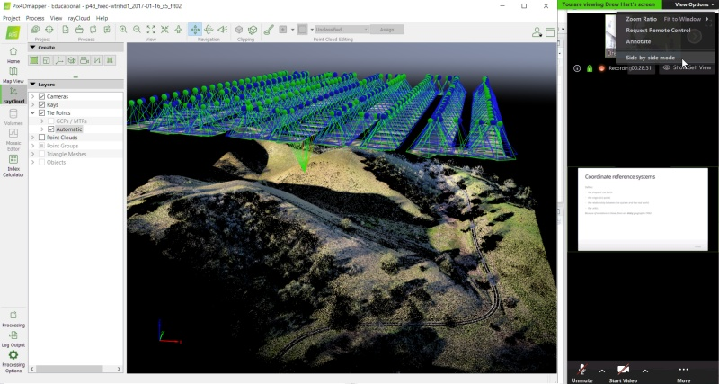

Computer Setup
Setting Up Your Workspace
Try to find a spot which is comfortable and relatively free from distractions and background noise. A little background noise is not a problem as you’ll be on mute most of the time, but consider a pair of headphones to minimize distractions.
Ergonomics are important! If you’ve ever tried to work on a laptop while sitting on a couch for 4 hours, it isn’t ideal. If you plan on multitasking, considering joining the audio via phone and headset so you have the option to move around.
Zoom
This workshop will be taught entirely online using Zoom. The link(s) will be sent you a week or two before DroneCamp starts (see also Getting the Zoom Links) .
Please install the Zoom Client for Meetings on your computer. If you’ve used Zoom before, and you see Zoom in the Start Menu (Windows) or Finder (Mac), then you already have the client. Please make sure you have the latest version, as some of the buttons and features have changed.
Note: After May 30, 2020 Zoom will only allow version 5.0 of the Zoom client or higher to connect to meetings.
A Zoom account is not required. A webcam is not required.
Viewing Zoom and GIS / Photogrammetry Software Simultaneously
Dual Screens
A second screen is very helpful, especially for hands-on workshops where you’ll be working through a software exercise. With a second screen, you can view the instructor / slides in one window, and work on RStudio in the other.
If you have an external monitor for your laptop / computer, you’re all set. You can put Zoom on one monitor and RStudio on the other. If you don’t have a second monitor, a tablet can be used to watch the slides / presentation as you work through the exercise on your laptop. Zoom is available as an app for all major tablets and phones.
Single Screen Options
If a second screen isn’t possible, you can also arrange your windows so that you see both your GIS program and Zoom side-by-side (see below for example). You can devote the entire width of the Zoom window to the screen share by going to ‘View Options’ and making sure side-by-side mode is turned off.

arranging GIS and Zoom side-by-side on a single screen
Tip: Zoom unfortunately does not have an ‘always on top’ mode, but you can keep the Zoom client on top by using a 3rd party utility like DeskPins.
Zoom Audio
If you find the audio is garbled, you can dial-in with a phone. In that case, you should disconnect from the the audio on your laptop or tablet (to prevent echo).
Muting and unmuting yourself are essential skills for Zoom. It’s generally good practice to stay muted until you have something to say.
If you’re using the Zoom app on Windows, click the microphone button. If you’re using the Zoom app for phones and tablets, tap the middle of the screen to make the controls visible.
If you dial-in on a phone, you can use the ‘mute’ button on your phone app, or dial *6 to mute or unmute yourself.
GIS and Photogrammetry Software
Below are installation instructions for the different GIS and photogrammetry programs that will be used at DroneCamp. Note you probably don’t need to (or want to) install all these programs.
Agisoft Metashape and Pix4Dmapper are both professional quality drone photogrammetry programs. They have similar features and both offer trial licenses. You’re welcome to install them both if you want to take both workshops (Tues & Wed) to compare them. If you have to pick just one, Pix4Dmapper is slightly easier to use but also more expensive after the trial period.
ArcGIS Pro and QGIS are desktop GIS software. They’re both well-developed and supported. QGIS is open source and therefore free to install and use. ArcGIS Pro requires a subscription which can be expensive unless you have access to it through your organization (many colleges and universities provide it to their students and staff). ArcGIS Pro also has the ability to stitch drone images.
WebODM Lightning is a lightweight GUI for Windows (free). When connected to an OpenDroneMap processing engine, you can use it to stitch images into 2D and 3D products. The processing engine that does all the number crunching can be in the cloud, your network, or your computer.
QGIS and Agisoft Metashape are available for Mac OS, Linux, and Windows. ArcGIS Pro and Pix4Dmapper are Windows only.
Agisoft Metashape
Agisoft Metashape is a professional photogrammetry program (see feature list). It requires a relatively new computer with at least 16GB RAM, a multi-core CPU (i7 or equivalent recommended), and preferably a compatible GPU. For additional details see System Requirements.
Installing Metashape requires about 500MB of hard drive space. The demo files for the DroneCamp Metashape workshop will be approximately 5GB (see the workshop description for the link).
Unfortunately there is no cloud VM option for Metashape If you are unable to install the software on your own computer, you are welcome to join the workshop anyway and follow the instructor(s) as they go through the exercise.
Download the latest released version of Agisoft Metashape Professional Edition (currently 1.6.2) from:
https://www.agisoft.com/downloads/installer/
Installation is fairly straight-forward. When you first launch Metashape, you’ll be prompted to enter a license code or start a 30-day trial.
Caution: don’t start your 30-day Metashape trial until May 27, 2020, or later, otherwise it’ll expire before DroneCamp!
If you’d like to familiarize yourself with Metashape before DroneCamp (recommended), there are number of tutorials and sampe datasets available from Agisoft.
ArcGIS Pro
ArcGIS Pro vs. ArcMap
ArcGIS Pro is the latest destkop GIS software from ESRI. It is not the same as the venerable ArcMap (aka ArcGIS Desktop), which is on its way out. If you’ve used ArcMap, it will help you pick up ArcGIS Pro, but they are not the same. All ArcGIS workshops at DroneCamp are using ArcGIS Pro.
Note: ArcGIS Pro runs on Windows only.
a) Get a License
THe first step for installing ArcGIS Pro is getting a license. For a long time ESRI has had a 21-day ArcGIS Trial program, however at the current time this program is limited to organizations responding to the COVID-19 pandemic.
ESRI is currently giving out free software licenses to all students, including ArcGIS Pro desktop software, through August 31, 2020 through Learn ArcGIS. Many colleges and universities also provide licenses to ArcGIS software.
For non-students, a personal-use license for ArcGIS Pro costs $100 a year. ESRI also has programs for employees of Nonprofit Organizations and Conservation Organizations.
If none of these options work, we can provide temporary 14-day ArcGIS Pro licenses to registered DroneCamp participants. Look for a welcome email with more info.
b) Download the Software
After you have a license, you can download the desktop software by logging into ArcGIS.com.
After you log-in, click on your name and go to ‘My Esri’. Once you’re arrived at ‘My Ersi’ , go to the ‘My Organizations’ tab, then ‘Downloads’. You should see the download files for ArcGIS Pro. If you don’t see a download link for ArcGIS Pro, then your license may not include the desktop software. Go back to Step 1.
The current version of ArcGIS is 2.5. It is a big program - the installation file by itself is almost 1.8 GB. Give yourself enough time to download and install it.
c) Install the software
Installing the software is usually pretty straight forward. After you install ArcGIS 2.5, there is at least one patch or update. You can download the patch and run it, or use the ‘update’ option within ArcGIS Pro.
ArcGIS Pro vs. ArcGIS Online
ArcGIS Online is ESRI’s platform for creating web maps, accessing online data, publishing web data collection forms, etc.
If you have a working license for ArcGIS Pro, it almost certainly includes access to ESRI’s online resources (which ArcGIS Pro requires). But the reverse is not always true. An online account may or may not activate ArcGIS Pro. Check the details of your license.
ArcGIS Pro ‘Step Zero’ Assignment
Please complete the ArcGIS Pro Step Zero assignment prior to DroneCamp.
OpenDroneMap
OpenDroneMap normally runs on a server, which could be on your local computer or could be somewhere on the cloud. Once you have a server going, you typically access OpenDroneMap through a browser (or Python).
For DroneCamp, we’ll be using WebODM Lightning. WebODM Lightning has two parts. The Desktop App for Windows is a modest program you can install and provides a user-friendly interface to submit your images for processing, select processing options, view results, etc. However the destkop app by itself is useless - it doesn’t actually process any data! For that you need to connect it to a processing engine or ‘node’, which again could be running on your local computer or in the cloud.
For the DroneCamp WebODM workshop, we would like everyone to:
install the WebODM Lightning client for Windows, and
sign-up for a free WebODM Lightning account
This combo will give you a user-friendly interface and access to a good server on the cloud to stitch your images. The WebODM Lightning server is not free, but your WebODM Lightning account includes a generous 150 free credits which will be plenty for the DroneCamp exercise (don’t use them up before then!)
To get started, please visit webodm.net. Look for the blue “Sign Up” button to create your WebODM Lightning account. Use the blue “Download For Windows 64bit” button to download and install the WebODM Lightning client. Once you’ve done both of these, you’ll be all set for DroneCamp.
If you’d like to install OpenDroneMap your own hardware (and access it through a browser), you’re welcome to try that also. A Windows 10 or Ubuntu Linux computer with at least 16 GB RAM is recommended. (Manual installation instructions are here). This process has more steps and may require some fiddling. We won’t be able to address any installation or configuration issues during the presentation, so if it gives you trouble please use the Lightning method above.
ODM ‘Step Zero’ Assignment
Install the WebODM Lightning client and create your WebODM Lightning online account as described above.
Pix4Dmapper
Pix4Dmapper is a professional drone photogrammetry software that creates spatially accurate 2D and 3D models from photos taken by a drone. To run it successfully, it requires a releatively recent computer with a multi-core CPU, 8GB of RAM (preferably more), and a CUDA compatible GPU. Pix4D Desktop runs on Windows only.
Tip: Pix4Dmapper refers to a license that unlocks different features in Pix4D Desktop and Pix4D Cloud.
Installing Pix4D Desktop requires about 500MB. Data for the workshop will be about 3.6GB.
Unfortunately there is no cloud VM option for Pix4D. If you are unable to install the software on your own computer, you are welcome to join the workshop anyway and follow the instructor(s) as they go through the exercise.
To install Pix4D Desktop, you need a valid Pix4D account. You can sign-up for Pix4D account and get a free 15-day trial license by going to https://cloud.pix4d.com.
Caution: don’t start your 15-day Pix4D trial until June 11, 2020, or later, otherwise it’ll expire before DroneCamp!
After you have your account, you can download the Pix4D Desktop from the link below. The latest release is 4.5.6.
https://cloud.pix4d.com/download/
Installing Pix4D Desktop is fairly straight-forward. The first time you launch it you’ll be prompted to sign-in using your Pix4D account name and password.
If you’d like to familiarize yourself with Pix4D before DroneCamp (recommended), select ‘Demo Project’ from the splash screen. There is also a Getting Started guide and a number of Example Projects with data you can download from Pix4D.
Tip. You may be able to extend your trial license for an additional 10 days. For details see How to get a trial of Pix4D Desktop.
Pix4D ‘Step Zero’ Assignment
Please complete the Pix4Dmapper Step Zero assignment prior to DroneCamp.
QGIS
To install QGIS, start by downloading the installation file for your operating system from:
https://qgis.org/en/site/forusers/download.html
Please install the long-term release (most stable) version, which is currently QGIS 3.10.5 (A Coruña). We recommend using a Standalone installer.
Installation is usually very straight-forward. For more detailed instructions, please visit:
https://qgis.org/en/site/forusers/alldownloads.html
QGIS is available on Windows, macOS, Linux and Android. Please note that the workshops in DroneCamp 2020 using QGIS were developed and tested on Windows. The software appearance or behavior may differ slightly on other operating systems.
QGIS ‘Step Zero’ Assignment
Please complete the QGIS Step Zero assignment prior to DroneCamp.
Mission Planning Apps
Mission Planning apps (also referred to as Flight Management, Autonomous Flight, or Ground Station apps) help you design and execute a flight to capture images for mapping. The DroneCamp Mission Planning workshop will include breakout sessions in which an instructor will demo how to plan a drone mission (flight) using one of the following common apps. If you’d like to follow along or complete the exercise on your own, you are encouraged to install one of the apps below.
Note: With one exception (eMotion), the mission planning apps below are designed for mobile devices (Android and iOS). They work ok on phones, but are much easier to use on tablets. Professional drone mappers generally use tablets to design and execute drone missions due primarily to their larger screen size.
Drone Deploy
DroneDeploy is the mission planning app from DroneDeploy. It supports a wide range of drones and cameras, and is free to install and use. If you have a DroneDeploy subscription, you can also use it to upload images for processing.
DroneDeploy is available for both Android and iOS.
DJI Pilot
DJI Pilot is a mission planning app for DJI’s higher-end drones, including the Matrice 200 series, Phantom 4 RTK, and Mavic 2 Enterprise drones. Available for both Android and iOS.
eMotion
eMotion is flight management software from Sensefly designed specifically for their eBee fixed wing drones. Unlike the other apps in the workshop, eMotion is Windows software and only available to people with a Sensefly account (i.e., who own an eBee). Therefore, installing it is not an option and the breakout session will be a demo of the features.
Pix4Dcapture

Pix4Dcapture is the mission planning app from Pix4D. It supports a wide range of drones and cameras, and is free to install and use. If you have a Pix4D subscription, you can also use it to upload images for processing. Available for Android and iOS.
PrecisionFlight for DJI Drones

PrecisionHawk’s PrecisionFlight mobile app is a full-featured flight planning app. It is free to install and use. If you have a PrecisionHawk subscription, you can also use it to upload images for processing. Available for Android only.